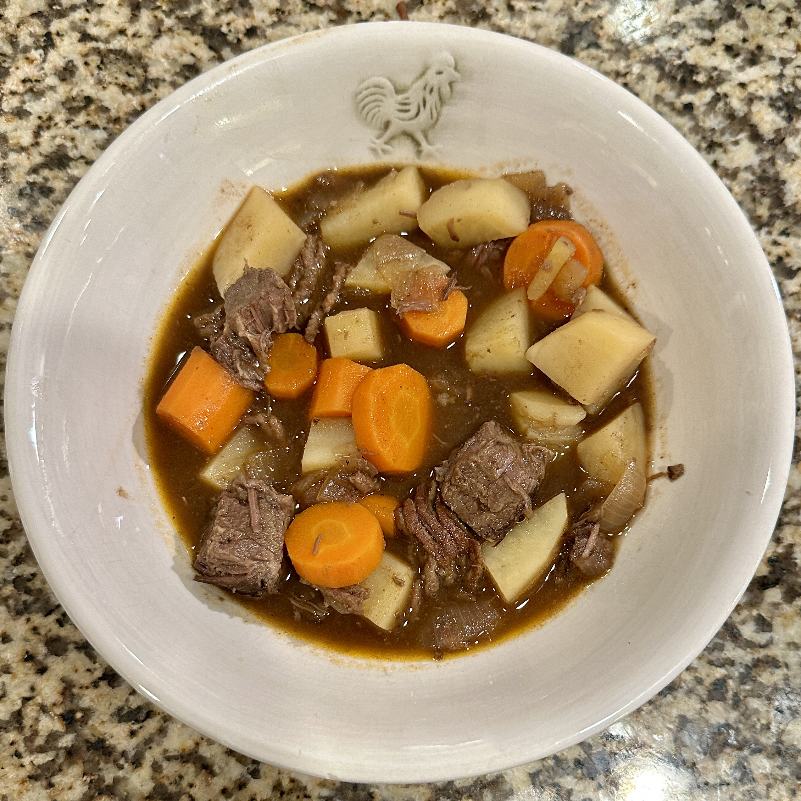

Scouse
Home
Scouse is a type of stew that originated in Liverpool, England. It is traditionally made with meat (usually lamb or beef), potatoes, carrots, and onions. The dish is often associated with the working-class culture of Liverpool and has become a symbol of the city's culinary heritage.
Ingredients
- 500g lamb or beef, diced
- 4 large potatoes, peeled and diced
- 2 carrots, sliced
- 1 onion, chopped
- 2 cloves garlic, minced
- 1 liter beef or vegetable stock
- Salt and pepper to taste
- Fresh parsley for garnish
Instructions
- In a large pot, brown the meat over medium heat.
- Add the onions and garlic, cooking until softened.
- Add the carrots and potatoes, stirring to combine.
- Pour in the stock and bring to a boil.
- Reduce heat and simmer for 1-2 hours until the meat is tender.
- Season with salt and pepper to taste.
- Serve hot, garnished with fresh parsley.

Related Recipes
Check out these other delicious recipes: